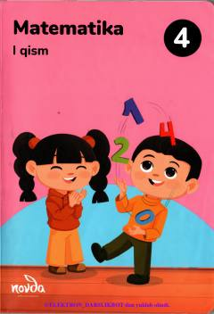

M44-sinf o'quvchilari uchun matematika fanidan birinchi qism darsligi.
Ushbu darslik umumiy o'rta ta'lim maktablarining 4-sinf o'quvchilari uchun mo'ljallangan matematika fanidan birinchi qismdir. Kitobda ko'p xonali sonlar, geometriya unsurlari hamda mantiqiy va amaliy mashqlar o'rin olgan.